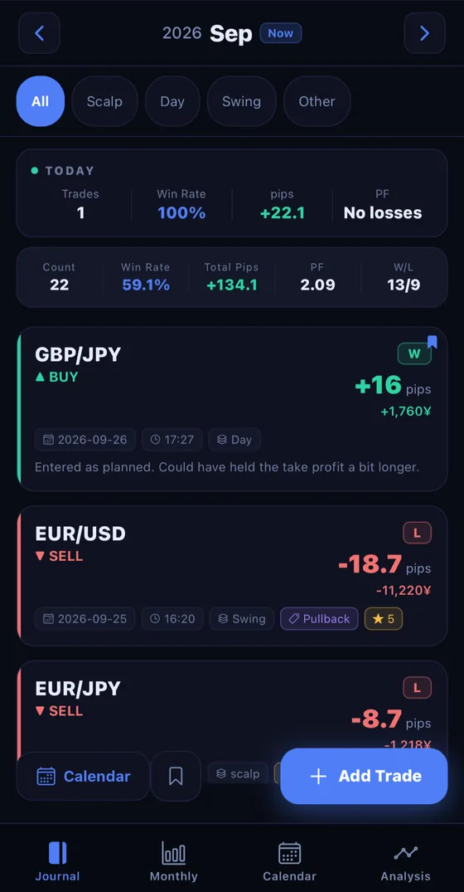
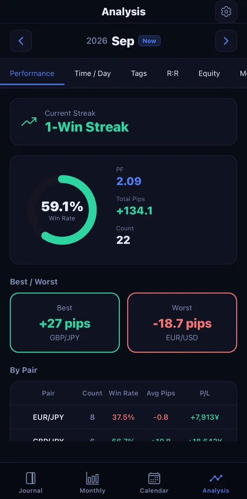
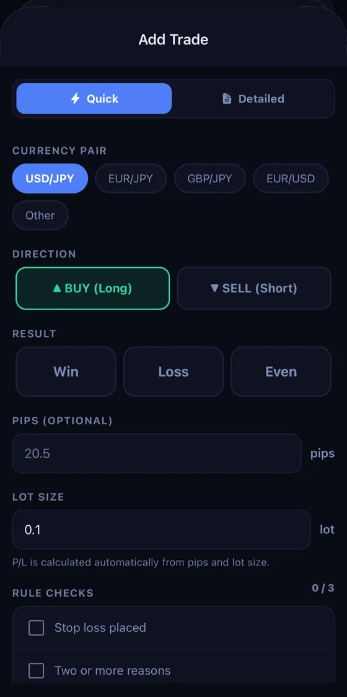

Available in 16 countries and regions, including Japan, the United States and Switzerland. Not available on the App Store in the EU, EEA or the United Kingdom.
Illustrative currency pairs. Not live market data.
Supported pairs (partial list): USD/JPY, EUR/JPY, GBP/JPY, EUR/USD, AUD/JPY, USD/CHF, NZD/USD, GBP/USD and more
Trading journal & analytics app
Just log a trade and your win rate, pips, and profit factor appear automatically. Your results become a shareable card that keeps you motivated. Everything works on your phone or tablet.
Sample screen. Not actual trading results.

Sample screen. Not actual trading results.
Why journaling doesn't stick
Right after a losing trade is exactly when the will to log it disappears. A notebook or spreadsheet that takes effort to fill in grinds to a halt at that exact moment.
FX Trade Journal removes the "too much hassle to write it down" excuse with one-tap logging and MT4/MT5 trade history import. Analysis only becomes meaningful once you keep the streak going.
Features

Sample screen. Not actual trading results.
Just by logging trades, your monthly win rate, pips, and profit factor are tallied automatically. See patterns by time of day, day of week, and currency pair at a glance.
Turn your monthly results into a stylish card and share it on X, Instagram, or LINE. Seeing your progress add up becomes the fuel to keep going.

On your commute or right after closing a trade — one tap is all it takes, so you can keep a trading journal using only your phone or tablet.
FX trading history is sensitive data that can reveal your financial position. That's why encryption and biometric lock come standard.
Sample screen. Not actual trading results.
Put it on your Home Screen and this month stays in view. Numbers you can see are numbers you keep logging for.
Pricing
For building the logging habit. Core features stay free forever.
Free
For traders who want to review their performance seriously.
Prices shown are for Japan (JPY, tax included). The price displayed on the App Store varies by country/region. If you cancel during the 7-day free trial on the annual plan, you will not be charged. Once the trial ends, you will automatically be charged for the annual plan (JPY 5,000). Subscriptions renew automatically and can be cancelled from your device's Settings app up to 24 hours before the end of the current period. See our Terms of Use and Privacy Policy for details.
FAQ
Start reviewing today, with your very next trade.